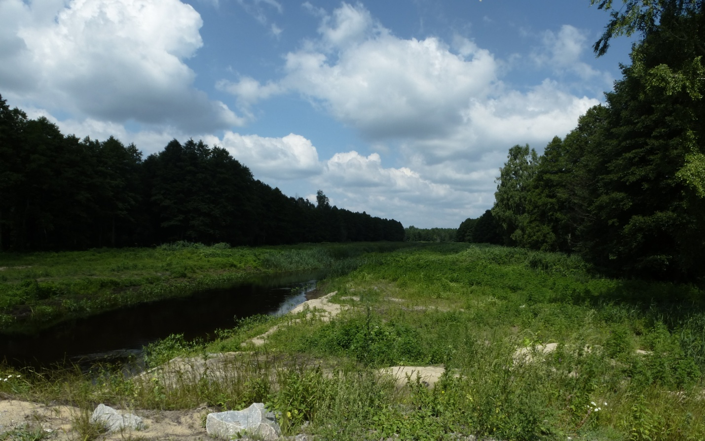
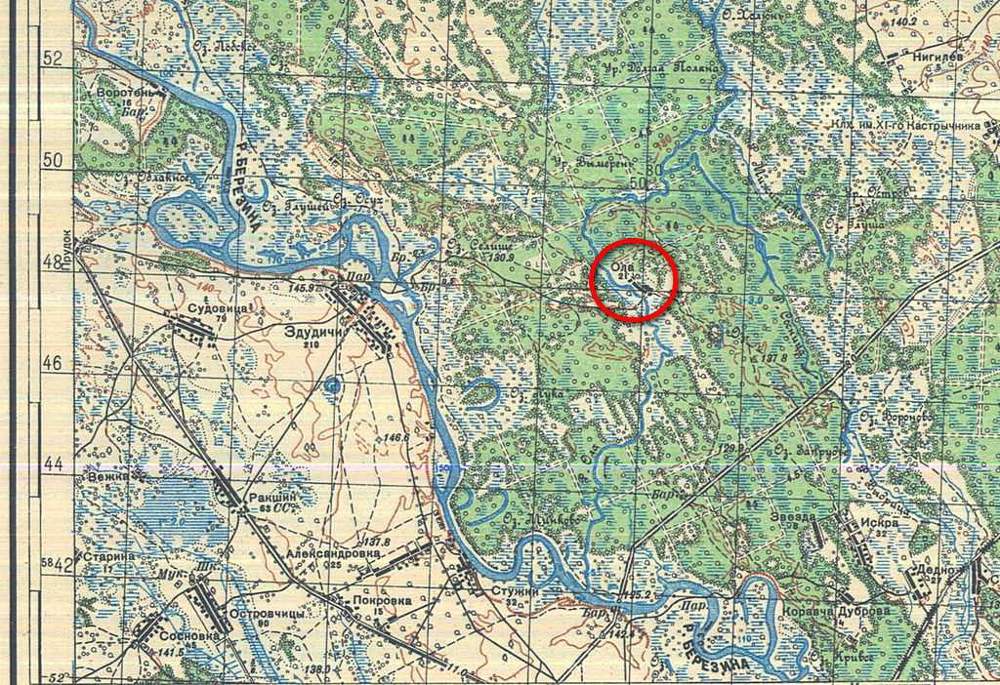
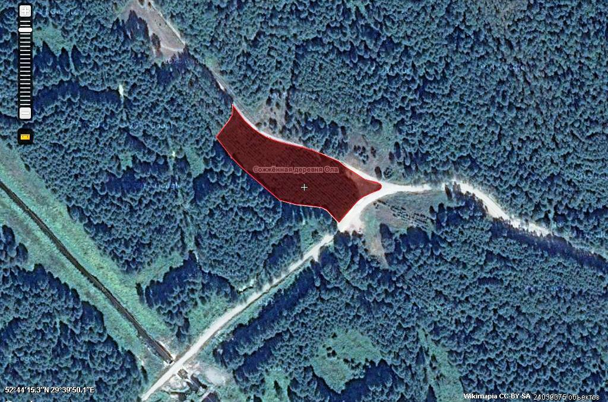
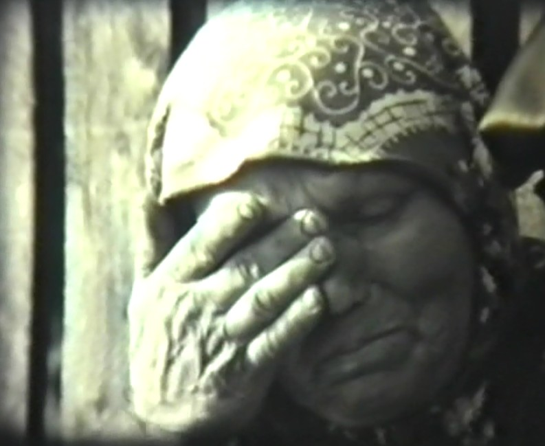
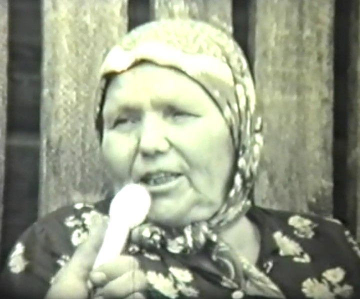
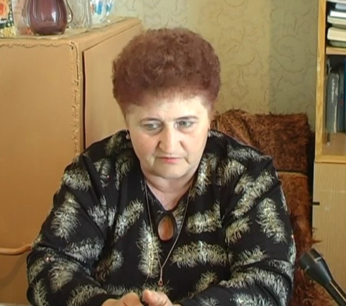
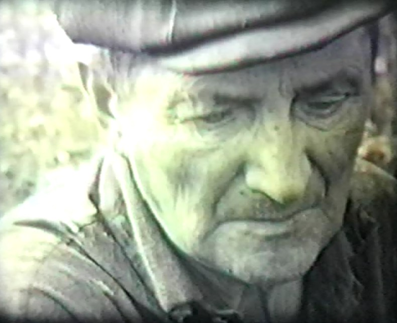
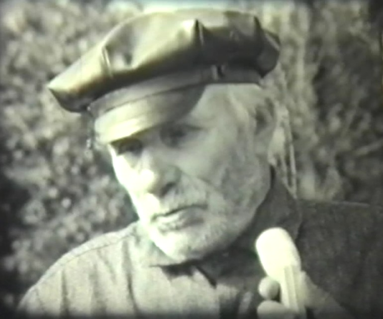
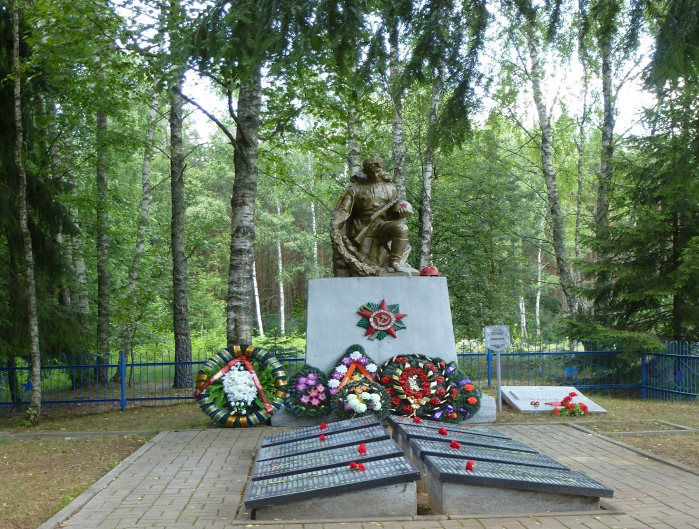

Говоря о жертвах Великой Отечественной войны, мы в первую очередь вспоминаем о миллионах погибших. Тех, кто пал на полях сражений, замучен в концлагерях, расстрелян или повешен карателями, умер от голода и холода. Одной из форм геноцида стало уничтожение деревень, часто вместе с населением. В скорбном и памятном списке Светлогорщины 4615 человек, не вернувшихся с фронтов. Более 5 тысяч мирных жителей района погибли в ходе карательных операций на оккупированной территории. Более 2-х тысяч были угнаны в фашистское рабство. Полностью разрушены 40 населенных пунктов. Одной из самых трагических страниц военной истории Светлогорщины является гибель 1758 человек мирного населения, сожжённого и расстрелянного в деревне Ола 14 января 1944 года. Деревня Ола не восстала из пепла. На «Кладбище невозрождённых деревень» в Хатыни покоится горстка земли из Олы. А 18 января 2017 года земля из Олы передана в Крипту Храма-памятника в честь Всех Святых и в память безвинно убиенных в Отечестве нашем. Воспоминания очевидцев трагических событий в Оле, дают возможность более глубокого осмыслить и осознать цену победы советского народа в Великой Отечественной войне. Есть острая необходимость найти и записать истории жертв, а также позаботиться о сохранении памятных мест. Исходя из этого, целью нашей работы является - сохранение памяти о невинных жертвах войны для предупреждения проявления геноцида в наши дни. Задачи:
Одной из форм нацистской политики геноцида и «выжженной земли» на оккупированной территории Беларуси в 1941–1944 гг. было уничтожение деревень вместе с населением. Такие документы, как генеральный план «Ост», «Инструкция об особых областях к директиве № 21 (план “Барбаросса”)», датированная 13 марта 1941 г.[5], «О военной подсудности в районе “Барбаросса” и об особых полномочиях войск» от 13 мая 1941 г., «Двенадцать заповедей поведения немцев на востоке и их обращение с русскими» от 1 июня 1941 г., освобождали фашистских солдат от ответственности за преступления и возводили зверства по отношению к мирному населению в ранг государственной политики. [4] Это был заранее разработанный, обдуманный и целенаправленный план геноцида и разграбления национального богатства страны. Преступления оккупантов по своей массовости и страшной жестокости не знали себе равных. Практическому осуществлению преступлений способствовала идеологическая обработка солдат вермахта, проводимая в ходе подготовки агрессии против СССР. В изданной для личного состава вермахта «Памятке немецкого солдата» говорилось: «У тебя нет сердца, нервов, на войне они не нужны. Уничтожь в себе жалость и сочувствие – убивай всякого русского, советского, не останавливайся, если перед тобой старик или женщина, девочка или мальчик, - убивай, этим ты спасёшь себя от гибели, обеспечишь будущее своей семье и прославишься на веки…»[7] Расстрелы и массовые экзекуции приобрели огромные размеры. Уничтожение белорусского населения с применением жестоких форм проводилась часто под предлогом борьбы с партизанами. А так как военные операции против партизанских отрядов часто не давали необходимых результатов, то за «успехи» выдавались сожжённые мирные деревни и убитые жители. С осенне-зимнего периода 1943/1944 гг., когда началось освобождение Беларуси, проведение тактики «выжженной земли» приняло наиболее широкие масштабы, возросла роль вермахта в ее осуществлении. Создавались специальные команды поджигателей, в задачу которых входило при отходе проводить полное опустошение оставляемой территории. Сотни белорусских деревень были ограблены, разрушены и сожжены. Население уничтожалось или угонялось в Германию. В результате целые районы Беларуси были превращены в зоны пустынь. 8 января 1944г. началась Калинковичско-Мозырская наступательная операция войск 1-го Белорусского фронта, проходившая с 8 по 30 января 1944 года. В операции были задействованы 61-я армия (командующий генерал-лейтенант П. А. Белов), 65-я армия (командующий генерал-лейтенант П. И. Батов), значительная часть сил 16-й воздушной армии (командующий генерал-полковник С.И. Руденко). Советским войскам противостояла 2-я немецкая армия (командующий генерал пехоты Вальтер Вайс) из состава группы армий «Центр». [1] Отступая, гитлеровцы цеплялись за каждый населённый пункт, используя лесисто-болотистую местность и водные препятствия, создавая оборонительные рубежи. Советским частям доводилось с большим упорством и мужеством прорывать оборону противника. Снежной зимой 1943/1944гг. деревня Ола Паричского (ныне Светлогорского) района оказалась в прифронтовой зоне. [5] Из материалов фондов Светлогорского историко-краеведческого музея мы узнали о довоенной истории д.Олы: «Ола, деревня Чирковичского сельсовета. Название походит от одноименной реки (приток Березины), на берегу которой и было основано поселение. Упоминается в документах с 1875 года, как населённый пункт Бобруйского уезда Минской губернии. Имелось 6 дворов, являлась государственной собственностью. По переписи 1917 года входила в Паричскую волость, имела 3 хозяйства, 18 жителей. В 1926 году – 17 дворов, 79 жителей. Перед войной в 1941г. в деревне Ола насчитывалось 34 двора и проживало 168 жителей. В деревне размещался Шатиловский лесоучасток. Жители деревни работали в колхозе « Путь социализма». Хозяйство славилось в районе высокими урожаями льна, конопли, проса, картофеля и овощей. Хорошо развивалось животноводство. В деревне работала начальная школа, которую накануне войны окончило 35 учеников».   Так как деревня Ола была окружена со всех сторон болотами и лесами, сюда от преследования немецких захватчиков зимой 1943/1944г. потянулись люди из близких и дальних деревень Паричского и Жлобинского районов: Здудичи, Чирковичи, Рудня, Искра, Коротковичи, Мормаль и др. В ожидании прихода Красной Армии здесь искали убежище старики, жен-щины, дети – около 2000 человек. Теснились в домах, землянках, мёрзли в сараях и других сельскохозяйственных постройках.[5] Беда пришла 14 января 1944г. в 6 часов утра. Деревню со всех сторон окружил фашистский карательный отряд. Всех выгоняли из домов и других временных убежищ и приказали идти в большой сарай, где до войны стояли колхозные животные. Объяснили: для регистрации на эвакуацию. Те, кто пытался бежать за деревню сквозь вражескую цепь, падали, скошенные ав-томатными очередями. Кто прятался в землянках и ямах, того находили собаки. Из сарая забирали отдельными группами, заявляя при этом, что будут автомашинами отвозить в тыл, и отводили на другой конец деревни. Загоняли в дома, сараи, обливали горючей жид¬костью и поджигали. Люди погибали от огня и взрывов гранат, что за¬брасывались в окна и двери. Стариков и детей живыми бросали в огонь, а тех, кто выбегал из пламени, убивали. В завершение расправы подожгли сарай. Люди поняли, что их ждет гибель, и ринулись через ворота во двор. Всех расстреливали из автоматов и пулеметов.[2]  «Спасаясь от гитлеровских извергов, многие жители посёлка Восход, деревень Коротковичи, Бродки, Красновка, Дуброва, Антоновка и других укрывались в деревне Ола Полесской области, и в лесу, находящемся вблизи этой деревни. Немецко-фашистские захватчики 14 января оцепили деревню Ола и учинили дикую расправу над мирными советскими гражданами. Озверевшие гитлеровцы загнали стариков, женщин и детей в дома и сараи, заперли их там, а затем сожгли живьём. Фашистские изверги бросали в горящие дома гранаты, стреляли из автоматов и следили, чтобы никто не мог убежать. В одном сарае, на северо-западной окраине деревни, немцы заживо сожгли до 70 человек. В огне погибли Александра Зыкун – 95 лет, Яков Курулович – 85 лет, Степан Зыкун – 81 года, грудные дети – Александр Устименко – двух месяцев, Феня Зыкун – трёх месяцев и многие другие. По рассказам оставшихся в живых жителей деревни, немцы в течение этого дня расстреляли и сожгли свыше тысячи мужчин, женщин и детей», – говорится в сообщении Советского Информбюро от 7 Апреля 1944 года. [8] Из книги «Памяць. Светлагорск. Светлагорскi раён» мы узнали, что лишь немногим удалось спастись от той страшной расправы. Среди них – Ольга Курлович, которая вместе с сыном притворилась мёртвой среди трупов. Тараса Колеснева ранили в голову. Истекая кровью, он неподвижно лежал на снегу и видел, как погибла его семья. «В очередной группе, где было человек сорок, узнал свою жену и детей. Она начала оглядываться, наверное, искала меня. Хотел было приподнять голову, но здравый смысл подсказал: «Лежи, умереть всегда успеешь». Низенький толстый фашистский офицер, который стоял метрах в двадцати на небольшой возвышенности, размахнулся и бросил в толпу гранату. Раздался сильный взрыв. А сзади приближалась очередная группа людей. От группы отделилась женщина в телогрейке в большом клетчатом платке. Автоматчик шел за ней. Я услышал просьбу позволить сгореть в своем доме. Это была Аксинья Тимофеевна Курлович, жена бухгалтера колхоза. Под дружный хохот фашистов женщина повернулась и твердым шагом пошла к своему горящему дому. За ней бежал фашист с большим баллоном за спиной. На ходу опрыскивал ее бензином. Женщина не обращала на него внимания. Офицер достал пистолет. Но на пороге дома женщина вспыхнула факелом и скрылась за дверями…» – читаем мы в книге «Памяць. Светлагорск. Светлагорскi раён» воспоминания свидетеля тех событий Тараса Колеснева.[5] Вспоминает Мария Степановна Дикун: «Это в памяти и в сердце осталось до самого гроба. А родных очень много погибло. И я чуть не погибла. Загоняли в дома и сжигали. Так они, обгоревшие, и стоят. С детьми на руках, вроде как живые, только чёрные. Но как дотронешься, так и рассыпаются пеплом. И ветер этот пепел разносит…»  Краевед Мария Зыкун, долгие годы проработавшая в филиале Светлогорского музея в д. Чирковичи, бережно сохранила воспоминания о событиях 14 января 1944 года жителя Олы Артема Устименко.  В тот день Артёму Устименко удалось выбраться из дома, который стоял поодаль от деревни, и доползти до леса. «Люди из близлежащих деревень по льду Березины уходили в Олу, потому что та располагалась среди болот, в непроходимом лесу. Все надеялись, что фашисты здесь их не достанут. И что каратели пришли в деревню – это не случайно, без предателей, полицаев тут не обошлось. В моей памяти и сейчас стоит в ушах ужасный плач женщин и детей, которые горели в огне» – рассказывал Артём Устименко. В этот ужасный день Артём Устименко потерял жену и четверо детей. После войны А.М.Устименко ездил в качестве свидетеля в Брянск, где судили военных преступников, которые зверствовали в Оле. В Зональном государственном архиве в г. Бобруйске, в протоколах опросов уцелевших жителей д.Олы мы встретили протокол опроса А.М.Устименко. Вот о чём он свидетельствует - «…в 8 часов утра стали поджигать деревню, а население загнали во дворы и расстреливали с автоматов, а также бросали в людей гранаты всему этому я был очевидцем, так как мне удалось спрятаться на чердаке своего дома. В моём дворе было расстреляно до 100 чел. мирных жителей, в том числе и мои родственники… Всех убитых немцы бросали в огонь, когда мой дом стал гореть, мне удалось бежать в лес, кроме меня также ушли в лес Зыкун Андрей Васильевич. Всего с нашей деревни осталось 14 человек жителей из них взрослых 10 человек. Мне так же хорошо известно, что в это время никто из остальных жителей не спаслись» [9]  Другой свидетель тех трагических событий, Гаврила Кондратьевич Зыкун, вспоминал: «За два часа до прихода карателей я оставил деревню и пошёл в лес со своей семьёй. Назад вернулся только через несколько дней, когда в Оле были уже наши войска. Страшная картина открылась моим глазам. Все строения были сожжены. На пепелищах лежали обгорелые кости. Во дворах и огородах, за деревней - убитые. Много трупов было у сожжённого колхозного сарая. Перед тем, как оставить деревню, фашисты издевались не только над живыми, но и над мёртвыми. Они бросали трупы в колодцы, в ямы, обливали бензином и жгли. Маскировали всё это снегом. Лишь через две недели, когда пришли советские войска, убитых и сожжённых похоронили в братской могиле». С приходом Красной Армии Гаврила Кондратьевич был призван в её ряды. Его фронтовые дороги пролегли через Беларусь, Польшу, Германию. Победу встретил на Одере. После войны Гаврила Кондратьевич вернулся на Родину. Построил дом и несколько лет прожил в своей родной деревне.[9]  В деревне Чирковичи живет Карленок Леонтий Романович, 1934 года рождения. Вот что он нам рассказал при нашей встрече: «Я местный, родился в Чирковичах. Отец работал до войны на мостострое и сестра тоже там работала. А мать дома была. Три сестры, все уже умерли. Я младший в семье. Зимой 1943/1944 г. у нас тут были страшные бои. Ну и нас немцы выгоняли всех в беженцы. Гнали нас в сторону Парич. А у нас был дядя Иван, он запряг корову, нас всех усадил на воз и поехали мы на Стужки. Там были немцы, но они нас не тронули. И мы в лес, в горелец, думали пересидим. А наши женщины пошли в Стужки за картошкой, их там поймали немцы. А река только остановилась. Мы через реку перетянули коров и сами перешли, и на Вьюново, думали там пересидим. Мы видели, что немцы ездят. Потом перебрались под Стасенки, говорили шепотом, голые и босые, голодные. Ходили на Олу просить еду. На Оле было очень много людей. И там нам не всегда давали еду. Палили костер только ночью. Нас там и бомбили, но никто не погиб, повезло. Мы ели осиновую кору, почки липовые, ни хлеба, ни соли не было. Олу сожгли 14 января, и мы ходили туда за едой: капуста, картошка кое-где осталась. Мы были свидетелями сожжения Олы, все слышали. Крики были ужасные, они до сих пор у меня в голове. Но 8 человек спаслось, они сбежали: лобак проломили и вырвались. И прибились к нам. Их палили в домах и сараях. И собаки их кусали, хорошо, что была метель. Мы вечером ушли оттуда, и тянули за собой ветки, чтобы замести следы. Разговаривали только шепотом. Все мои братья и сестры выжили. Нас из леса вывели уже наши солдаты. Все кругом было заминировано. А отсюда нас эвакуировали за д.Хутор. Здесь еще шли бои. Здесь было проволочное заграждение до д.Ракшин. Когда нас привели в д.Чирковичи, солдаты накормили. Наш дом сгорел. Отец вернулся с войны, он еще Берлин брал». В Зональном государственном архиве в г.Бобруйске нам был предоставлен документ о результатах работы чрезвычайной комиссии Чирковичского сельского Совета депутатов трудящихся, которая в начале 1945 года во всех окрестных деревнях произвела подсчет погибших в деревне Оле жителей. «За день чинимых зверств в деревне Ала, 14 января 1944 года, расстреляно и сожжено живьём 1.758 человек, из них: мужчин - 100 чел., женщин - 508 чел., детей - 950 чел., стариков - 200, из них комсомольцев - 4 чел., пионеров - 14 чел.» 27 января 1944г. на попелище, что осталось от деревни Ола пришли солдаты и офицеры 41-ой стрелковой дивизии 48-ой армии. Убитых и сожжённых в деревне Ола похоронили в братской могиле. 1758 человек – двенадцать жертвенных Хатыней…
После войны в деревню вернулись родственники погибших, переселились люди из соседних деревень. Стали обустраиваться, налаживать быт. Вернулся с фронта в родные места и Владимир Яковлевич Дикун. Владимир Яковлевич не застал в живых никого из своих родных и близких. Сгорела вся его семья. Не хотелось верить, что нет его родной деревни и некому ее возрождать. Владимир Яковлевич жил в Оле даже после того, как все его односельчане переселились в другие населённые пункты. Деревне Ола так и не суждено было возродиться. [9] 29.03.2012 решением №132 Светлогорский районный Совет депутатов решил упразднить деревню Ола Чирковичского сельского Совета Светлогорского района. После жуткой трагедии прошлого Ола хранит молчание. За все страдания природа наградила это место необычайной красотой. Как историческое место оно охраняется. Находящиеся на её территории исторические памятники зарегистрированы по отношению к деревне Здудичи. В нескольких километрах западнее Олы пять месяцев (до 24 июня 1944 года) проходила линия фронта. И рядом с могилой замученных мирных жителей похоронены 700 солдат, сержантов и офицеров Советской Армии.  18 января 2017 года земля из Олы передана в Крипту Храма-памятника в честь Всех Святых и в память безвинно убиенных в Отечестве нашем. Инициатором передачи земли в Храм-Памятник является Изяслав Григорьевич Котляров — поэт, публицист, журналист, общественный деятель, член союзов писателей Беларуси и России. По-настоящему народным проектом стало создание мемориального комплекса на месте сожжённой деревни Ола в Светлогорском районе. В бетоне и камне отображена трагедия и крик, боль и бессилие — события одного из самых страшных дней в истории. Каждая деталь в нем наполнена глубоким смыслом. Плиты возле входа — для имен павших. Сегодня известно только 300 фамилий, остальные еще предстоит установить. Чуть дальше — барельеф с картой Гомельской области, на которую нанесено 127 деревень: в каждой из них нацисты уничтожили более 100 мирных жителей. С обратной стороны — изображение родителей, которые пытаются прикрыть от приближающейся беды свое дитя. (Рисунок 3.1) Бывшая центральная улица Олы сейчас вымощена красной плиткой, будто раскаленными углями, на месте сгоревших домов — стилизованные калитки, изломанные, как судьбы живших здесь людей. (Рисунок 3.2) Плиты, сквозь которые проступают силуэты людей — тени тех, кто навсегда остался в этой земле. 12 беззвучных колоколов напоминают о жителях соседних деревень, которые бежали в Олу за спасением, а бетонные прямоугольники — словно парты, за которые уже не сядут дети…(Рисунок 3.3) Скульпторы из Минска - Екатерина Зантария, Игорь Зосимович, Валентин Борздый, Сергей Возисов, Михаил Ершов, Валерий Малахов, Могилёва - Корней Алексеев, Светлогорска - Александр Камардин отразили всю скорбь народа в камне. С каждым годом всё меньше и меньше остаётся очевидцев, которые могут поделиться воспоминаниями о войне, рассказать о геноциде. Память о войне необходима, чтобы наше и грядущие поколения сохранили чувство ответственности и не допустили подобных трагических событий, никогда не стали бы жертвами, палачами или равнодушными наблюдателями. Эта память нам сейчас нужна. Если мы войну забудем, вновь придёт война.
В годы второй мировой войны Беларусь, как никакая другая страна, пострадала от нацизма. Характерной особенностью политики геноцида и «выжженной земли», проводимой нацистами на территории Беларуси, стало уничтожение населенных пунктов. Тысячи деревень исчезали с лица земли, население истреблялось или угонялось в фашистское рабство. Лишь малой части людей из тех, кто горел вместе со своими родными, со своей деревней, удалось чудом вырваться из огненного ада, спастись, выжить. Более семидксяти лет назад деревня Ола Паричского (ныне Светлогорского) района повторила судьбу Хатыни. 14 января 1944г. фашистские каратели сожгли деревню Ола вместе с жителями. В Оле погибло 1758 человек – двенадцать жертвенных Хатыней. Известно, что спастись удалось немногим. Кондрат Гаврилович Зыкун с дочерью и Александр Иванович Зыкун спрятались в лесу. Вырвались из огня Андрей Васильевич Зыкун, Тарас Колеснев, Ольга Курлович с сыном, Артём Устименко. И потому так важно, жизненно важно, чтобы их правда о войне, правда о фашизме, звучала и сегодня. Деревня Ола не восстановилась. Поля, где раньше крестьяне выращивали урожай, сейчас зарастают лесом. А неподалёку от места, где располагалась сама деревня, стоит памятник в честь погибших 700 солдат, сержантов и офицеров Советской Армии. На месте сожженной деревни создан мемориальный комплекс «Ола». Место, где хочеться молчать. Мы скорбим по умершим в лагерях, погибшим от рук карателей и испытываем благоговейный трепет перед теми, кто выжил, томясь под грузом скорбных воспоминаний, но продемонстрировал силу человеческого духа. С каждым годом всё меньше и меньше остаётся очевидцев, которые могут поделиться воспоминаниями о войне, рассказать о геноциде. Память о войне необходима, чтобы наше и грядущие поколения сохранили чувство ответственности и не допустили подобных трагических событий, никогда не стали бы жертвами, палачами или равнодушными наблюдателями. Материал о трагедии, произошедшей в деревне Ола 14 января 1944 г., используется на классных и информационных часах в учреждениях образования, а также на районных мероприятиях патриотической направленности.